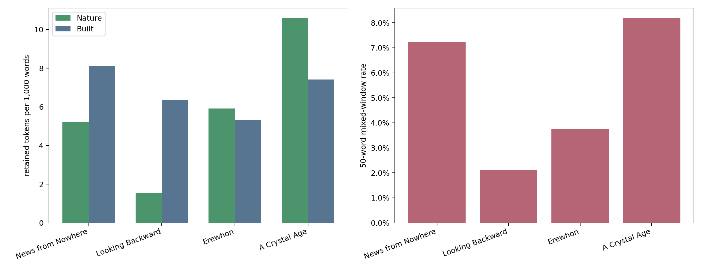

1 — Starting point
「再野生化された英国」は、本文にどう現れるか？
Wild Belongings
Stories of Rewilding in William Morris’s News from Nowhere and Diane Setterfield’s Once Upon a River
論文と本発表の位置づけ
エコクリティシズムは、文学のなかで人間と自然・環境の関係がどう描かれるかを考える研究で、Bennettの論文はその一例である。
BennettはMorrisの『News from Nowhere』とDiane Setterfieldの『Once Upon a River』を比較し、Thamesを軸に、人間中心の見方を問い直す再野生化の物語と社会・環境正義の可能性を読む。
二つの小説をつなぐThames
Morris, News from Nowhere
（1890年連載／1891年刊）
革命後の未来社会を描く。Thamesの旅で、街・家・樹木・野生生物との関係が見直される。
Setterfield, Once Upon a River
（2018年刊）
19世紀末を描く現代の歴史小説。Thamesは人間の思いどおりにならず、洪水も共同体の物語を動かす。
Bennettは両作に、人間中心の見方の転換、過去とのつながり、正義、物語ることを読む。
ここはBennett (2026) の比較の要約。Setterfieldの本文全体を用いた語数・共存率の集計ではない。
“… there is a more organic relationship between the natural and the built environments in Morris’s vision.”
Bennett (2026), p. 6 · 「Morrisの構想では、自然環境と建造環境がより有機的に結びついている」
問い 自然物と人工物が同じ場面に現れる頻度は、Morrisでとくに高いのか？
2 — Four works
比較するのは4つの同時代の
ユートピア／ディストピア文学
Morris, News from Nowhere 1890 / 1891
Thamesの旅を通して、革命後の英国を描く。Bennettの読解対象。
Bellamy, Looking Backward 1888
Bostonの中央集権的な産業組織と都市制度。
Butler, Erewhon 1872
機械・制度を反転して問う風刺的作品。
Hudson, A Crystal Age 1887 / 1919 rev.
田園、共同体、巨大な家と装飾を描く牧歌的ロマンス。
Open Libraryは参照した所蔵版、Gutenbergは今回の集計本文、Wikidataは作品の項目。リンク先は同一の版を表すとは限らない。
5 — Four-work result
今回のリストではHudsonが最も高い
50語窓の共存率：Hudson 8.18%、Morris 7.22%。差は0.96ポイント。

7.22%News from Nowhere 8.18%A Crystal Age 3.76%Erewhon 2.11%Looking Backward
OCR誤読による語の抽出ミスを減らすためGutenberg版を利用。Open Libraryから辿れるInternet Archive版OCRを742箇所修正して比べても、共存率差は最大0.2ポイントで作品順位は同じ（版差も含む）。
6 — Within Morris
制度の説明では少なく、街と川の旅で現れる
Londonでの遭遇
第1–10章
9.5%100 / 1,050窓
制度説明・革命史
第11–18章
0.8%7 / 854窓
Thames航行・帰還
第19–32章
9.9%113 / 1,143窓
第10章：Aldgateの先
meadow · river × house · street。家と草地、River Leaが同じ記述に入る。
第30章：旅の終わり
15 / 82窓（18.3%）。ただし短い章の率だけで作品全体を代表させない。
LondonとThames区間は近い率。制度説明の章群では低いという傾向が残る。
8 — Read the passages
同じ「共存」でも、物語上の働きは異なる
Morris：都市の再編
News from Nowhere 第10章
“Beyond that the houses are scattered wide about the meadows … the lovely river Lea”
house × meadow · river。家々が草地と川の中へ散らばる。
Hudson：家の立地
A Crystal Age 第2章
“the house had been raised on the natural foundation of one of these rocks … the river that flowed behind it”
house × river。家が岩と川の地形に沿って置かれる。
共存率は入口。都市の変容と家の立地という意味の違いは、本文を読んで確かめる。
Morris：第10章の対訳 ↗Hudson：対訳読書稿 ↗ Hudsonの対訳は第3・5・14章。引用した第2章の記述は家の模式図と原文根拠 ↗へ。
Appendix — Reproducibility
固定した116語から結果を再計算する
- 語彙入力：
data/expanded_lexicon.csvの自然56語・人工60語を固定して使用。114語版はdata/curated_lexicon.csvに保存。 - 本文入力： 4作品のProject Gutenberg版。使用したeBook番号とリンクは作品紹介スライドに掲載。底本の版が不明な作品もある。
- 数え方： 名詞の原形を照合し、章をまたがない50語窓を25語ずつ動かして、自然語と人工語が両方あれば共存と数える。
- 集計結果：
data/expanded_gutenberg_work_summary.csv、data/expanded_gutenberg_chapter_summary.csv、data/expanded_gutenberg_permutation_summary.csv。 - 検証資料：
data/expanded_gutenberg_example_window.jsonに本文例、data/expanded_run_metadata.jsonに入力ハッシュと計算条件を記録。 - 補助分析： Bennett論文の13事例をGutenberg版へ対応づけた位置照合は
data/expanded_gutenberg_bennett_alignment.csv。scripts/recompute_gutenberg_bennett_alignment.pyで再計算できる。 - 別条件の二軸分析： 9/13の人手判定は
data/bennett_2026_nfn_alignment.csv、都市／田園の本文窓はdata/morris_literal_town_country.csvに記録。
Gutenberg版と選定したInternet Archive版の共存率差は各作品で0.2ポイント以内。ただし底本の異同もあるので、差をOCRの効果だけには帰せない。